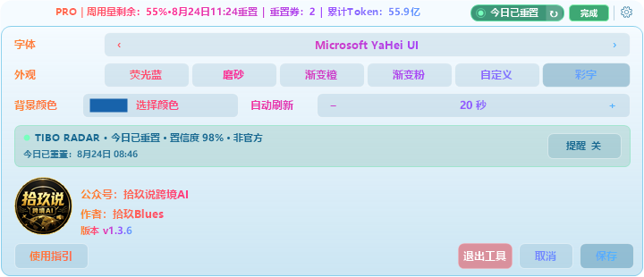
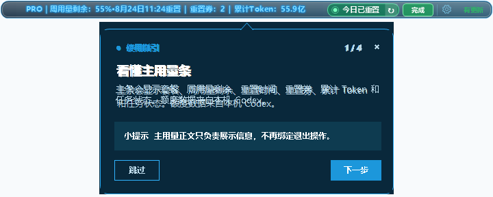

Codex 重置预告接进悬浮条，v1.3.6 又修了雷达离线
我做这个工具时，最不想看到的一句话是“早知道就好了”。重置公告晚看几个小时，任务安排会变，重置卡也可能用得不巧。
这次更新，我把提醒、刷新、使用指引和失败状态一起收拾了一遍。看得到，点得到，网络临时出问题时也不会马上把一条旧数据说成离线。
01 这次更新了什么
02 三步看懂顶部提示
03 雷达为什么会离线
04 数据从哪里来
05 下载与使用边界
有更新提示 检测到 GitHub 新的稳定版时，设置齿轮右侧会出现绿色“有更新”。右键齿轮可以查看当前版本、检查更新、下载更新或退出程序。
雷达可刷新 雷达右侧增加 ↻，点击就会重新获取状态。点击雷达状态块会打开 Codex Runway 中文页面。
指引会适配屏幕 首次启动的会话泡泡会根据可用区域缩放和换边。
设置页不再透底 展开设置时使用与主题一致的不透明底色。

先看主条 套餐、周用量剩余、重置时间、重置券、累计 Token 和任务状态仍在同一行。
再看雷达 有明确公开信号时，顶部会显示预告或“今日已重置”。点击状态块可以核对来源，点击 ↻ 可以手动刷新。
最后看齿轮 左键打开设置，右键打开更新菜单。新版本出现时，绿色“有更新”会和齿轮并排显示。
第一次启动会看到会话泡泡式指引。它按四页讲清主用量条、Tibo 重置预告、设置与更新菜单、再次打开指引的方法。
不同分辨率下，气泡会根据上下空间选择位置并缩放，第二页明确写出雷达刷新按钮和网络重试状态。

| 状态 | 工具在做什么 | 你可以怎么做 |
|---|---|---|
| 正常状态 | 按约 10 分钟周期读取公开状态 | 直接看预告时间和来源 |
| 网络重试中 | 保留最近有效数据，约 60 秒后重试 | 点击 ↻ 或等待重试 |
| 雷达离线 | 最近有效数据超过 30 小时 | 打开来源页核对 |
临时关闭 鼠标靠近预告窗右上角会出现红色 ×，点击后只关闭当前会话的顶部窗。
重新打开 单击主条里的重置状态胶囊，可以再次打开顶部预告。
核对来源 点击预告窗主体进入 Codex Runway 中文页面。
本机 Codex 路径 账户与用量通过本机 Codex CLI 的 app-server 读取，主条只在本机窗口中展示。工具不会直接读写 auth.json，也不会保存对话正文。
公开状态路径 Tibo Radar 读取 Codex Runway 汇总的公开非官方状态，再校验时间、来源链接和事件结构。它不会把本机令牌、额度或累计 Token 发给这个状态源。

打开 Release 进入 GitHub v1.3.6 Release。
下载安装包 选择 blues19-CodexUsageOverlay-Setup-1.3.6.exe。
需要时校验 Release 同时提供 SHA256SUMS.txt。
本文基于真实项目源码、最终程序导出截图和本地测试资料整理，使用 AI 辅助编辑与排版，功能、图片和事实结论由作者人工复核。